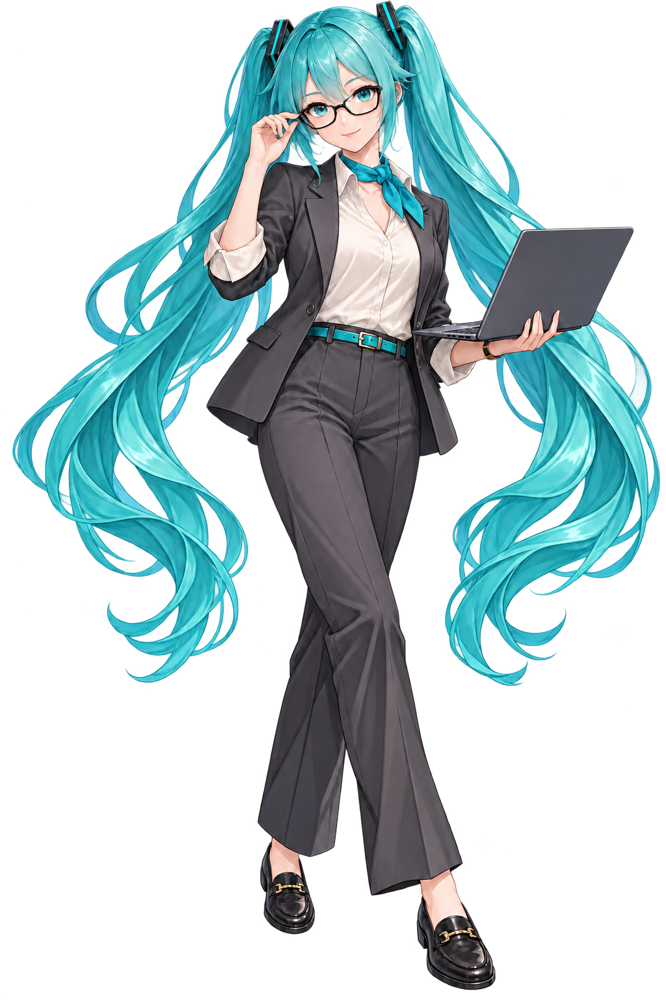

Tu proyecto,
bien encaminado.
T.E.T.O · Technical Evaluation & Tracking Overseer
Tu supervisora técnica: audita los cambios, detecta riesgos y mantiene el proyecto encaminado. Exigente con el código, comprometida con tu equipo.
Organiza el siguiente paso
Prepara borradores de tickets claros, con contexto y un alcance definido.
Revisa con criterio
Contrasta cambios de código con las reglas y la documentación del proyecto, y entrega observaciones concretas.
Mantiene el hilo
Da seguimiento al repositorio y ayuda a mantener la documentación al día.
«Está bien… pero vamos a revisar ese último cambio.»
Probada en un proyecto real. Sus funciones aún no se han migrado a un repositorio público.
El enlace estará aquí cuando el repositorio esté listo.

Tú creas.
T.E.T.O organiza.
M.I.K.U programa
contigo.
Dos compañeras de TEAMROOT para tu próximo gran proyecto.
Para quienes crean en solitario o en un pequeño estudio.
Tu idea,
línea a línea.
M.I.K.U · Monitoring, Inspection & Knowledge Unit
Tu compañera de programación. Para construir, entender y resolver, sin perder el control de lo que estás creando.
Construye contigo
Ayuda a convertir ideas en funciones y explica las decisiones para que formes parte del proceso.
Investiga lo que falla
Inspecciona código, busca la causa de los errores y propone cambios concretos.
Comprueba y comunica
Revisa cambios y consulta documentación. Distingue lo verificado de lo que todavía necesita pruebas.
«Vamos a entenderlo y a construirlo, paso a paso.»
En construcción. Sus capacidades siguen evolucionando y sus funciones aún no se han migrado a un repositorio público.
El enlace estará aquí cuando el repositorio esté listo.